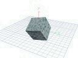

Contents of these pages are copyright 1999 by Charles McManis, All rights reserved.
Welcome web traveler to the home page for Project: 3D CraftTM I hope you enjoy your visit. These pages are a combination of things, they are a reference for the current implementation of Project: 3D Craft, they are also a tutorial of sorts on 3D programming (I say of sorts because they are more like a journal than a tutorial), and they are sort of a living history as the project evolves.
This version of these pages is dated Novt-11-99, if you would like to be informed when changes are made please send mail to (careful here "p3dc-request @ home.mcmanis.com" with the body of your message simply the word 'subscribe.' I'll send update announcements there.
There is a new demo/download that contains the program SceneTest. This program is the multiple camera view demo (see the gallery for a screen shot). Anyway, at 200KB it is smaller than downloading the whole distribution and rebuilding from scratch.
Two notes:
The complete release notes are available here.
New/Fixed this release --
As usual if you find problems or want to comment, feel free to send me mail (cmcmanis on this server [mcmanis.com]) My daughters are bugging me to write a game for them so I'm looking at doing "mazewar" as a way of exercising the library. The elements are there, all I need is to get them together into a coherent package.
Good question! (Ok so its a pretty obvious question.) For me it is a journey, a journey of understanding the nuances and subtlties that are 3D "engines." Of course there is no need to understand 3D engines these days, just use OpenGL or DirectX, the machines people are buying are now fast enough that pretty much anyone who can read documentation can put together enough code to write a game or demo. On the other hand, while writing games and demos are neat, I'm a systems guy who likes to understand the insides of things. And there wasn't a whole lot written on how to write a 3D engine for a game or a demo. One of the better resources on the web for 3D engines is the 3D engines list, which lists this engine as well. Other resources are various groups like the comp.graphics.algorithms and the game programming groups. Anyway, these web pages and this engine represent the current point on my journey.
Basically I'm an engineer that has worked with and programmed computers professionally since 1976. In 1977 I got "hooked" on the personal computer and lusted mightly for an Altair 8800 but instead bought a Digital Group Z80 system. From the beginning I've been interested in graphics, in the beginning it was characters on a TV set, then with a COSMAC Elf kit that I purchased and built in 1982 I moved up to 128 x 64 "pixels."
When I went to college I had access to a PDP-11 with an attached frame buffer that would do 512 x 512 x 24bpp and that was so awesome (but really slow, it took about a minute to load a complete frame). There was also a Tektronix 4014 that was high resolution (4096 x 4096) but only green & black, then there was an Apple ][ that had SubLogics 3D package on it, on that system I could rotate a wireframe cube in 3D! Woo hoo! I had high color, high resolution, and high speed, only they weren't in the same system.
Graphics took on new meaning when I went to work at Intel and worked on a graphics chip named the 82786 in 1984, it even has a small on board processor that could draw lines and do "BITBLT" (bit-blit aka Bit Block Transfers), further it could pump out 1024 x 768 resolution at a time when a monitor that could display that resolution cost $6000 from Barco. This was speed with lots of colors, but the cost was high, and I don't think Intel ever put the 82786 into serious production.
Then in 1984 I discovered Amiga and the infamous "boing!" demo (at Siggraph at Moscone center). A rotating, patterned sphere in real time with bounces off the edges of the screen. (and sound too!) I saved my pennies and bought an Amiga 1000. I loved that machine (and later the 2000) for what it could do and what it represented in terms of hardware accellerated graphics. I also was introduced to what was later to become Lightwave by a guy who was rendering movies frame by frame on his camcorder. A lot of work but the results were very cool, not Siggraph movie quality, but pretty darn neat none-the-less.
I left Intel for Sun in 1986, and after several years Sun introduced the SparcStation with the "Lego" board (you know it as the GX card). This was a pretty neat setup, and it did really fast fills using NURBS (non-uniform rational b-splines) There was even a flight simulator demo that really rocked, boy what 10+ MIPs and a graphics accellerator could do.
I then had a demo from a friend of mine (who had designed the GX and later helped start NVida) of the NVidia NV1 which was sort of like a GX board for PC compatibles. With great excitement and anticipation I went out and bought it in the form of the Diamond Edge 3D. video accellerator card. Big mistake. First the developer's support was non-existent, and second Microsoft had chosen a completely separate direction for Direct 3D (triangles rather than NURBs), the final straw was D3D sucked rocks and not just little rocks, big huge El Capitan sized granite rocks.
Now flash a bit farther forward, I'm reading gamespot.com and they "round up" 3D accellerators looking at the Virge DX, the NVidia NV1, a couple of others and the Voodoo Graphics. Well the 3DFx based Monster 3D board blows everything out of the water for benchmarks. I went out and bought one for $214.00. Plugged it in, loaded it up and WOW I had really cool stuff going on. When I ran the 3Dfx version of Tomb Raider I was just blown away. I wanted to be able to build an environment like that! Then I discovered that 3Dfx has a very accessible developer API called Glide and I downloaded it and all the docs. In less than a day I was drawing stuff on the screen and by the time the weekend was over I was rotating a cube, now I had the means and the goal, all I needed was the knowledge ...
{kind=link}